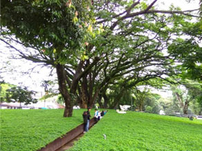
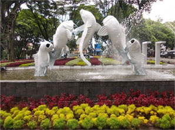

Taman
Balai Kota
Taman ini sudah sejak lama berdiri, dan sering digunakan untuk berolahraga seperti bersepeda. Namun dengan sedikit renovasi dan ditambahnya fasilitas, taman ini semakin ramai dikunjungi, entah untuk bersantai, berolahraga maupun bermain. Prisma gembok cinta, salah satu fasilitas yang disediakan untuk menggembok cinta dengan sebuah gembok, cocok bagi pasangan yang sedang jatuh cinta. Jika belum punya pasangan jangan berkecil hati, Anda juga bisa datang ke taman ini untuk sekedar menjelajah dunia maya dengan fasilitas Wi-fi gratis yang disediakan ataupun berfoto.
- 

- 